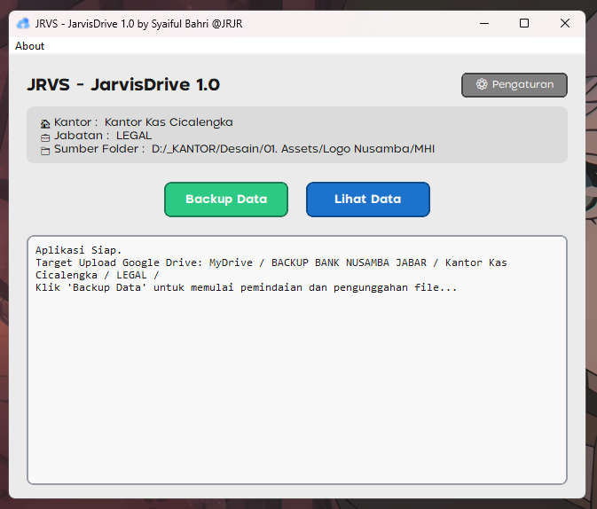
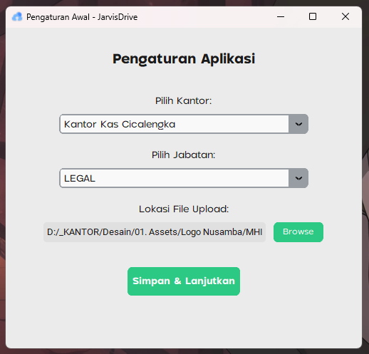
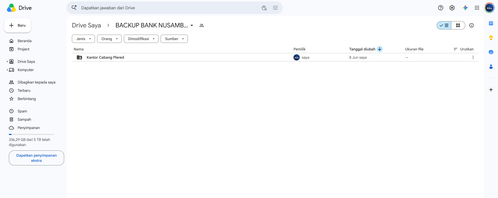

JarvisDrive adalah sebuah aplikasi bantu (*desktop app*) inovatif berbasis Python yang saya kembangkan untuk menjawab kebutuhan mitigasi risiko kehilangan data perusahaan.
Aplikasi ini berjalan di latar belakang dan secara otomatis mengunggah seluruh pembaruan data karyawan dari komputer lokal ke satu server Google Drive sentral secara real-time. Menggunakan sistem folder routing cerdas, semua file yang dicadangkan akan langsung terkategorikan secara rapi dan terstruktur berdasarkan peran (role) atau jabatan dari masing-masing pengguna.
Kehadiran sistem ini memastikan kelangsungan operasional bisnis tetap aman. Jika sewaktu-waktu terjadi kerusakan perangkat keras (misal: HDD rusak) atau file tidak sengaja terhapus, data-data krusial perusahaan dapat langsung direstorasi seketika tanpa khawatir ada data yang hilang.


